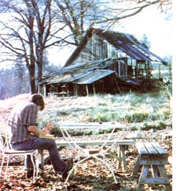
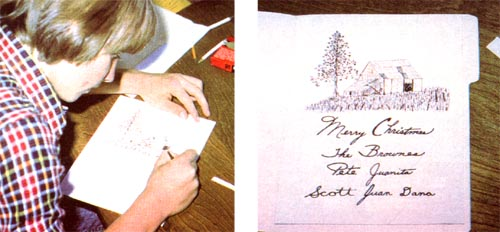

Add a unique touch to this year's season's greetings with . . .
If your household is anything like ours, December is one of the busiest months of the year. Consequently, the mere suggestion of squeezing in time to make handcrafted Christmas cards (no matter how much fun it'd be or how much money you'd save) probably makes you want to throw your hands up in despair, right? But-take it from a seasoned greetings-maker-you can do it with time to spare. . . that is, if you follow the Browne Family Card-Creating Recipe. With our special formula, you'll not only be able to make a hundred or more uniquely-yours notes, but you'll be able to manufacture these yuletide treasures for as little as 74 to 15d a card.
No kidding, all you'll need to produce our brand of homemade cards is a design (either original or transposed from another source) and a greeting . . . pasted up on a master card. Your local printer will take care of the rest. What could be simpler?
There are literally hun dreds of picture subjects around your house or homestead that could inspire fine sketches for your personalized holiday greeting cards. Here, the artist depicts a rustic old barn on the author'sproperty.
HERE'S WHAT YOU DO. . .
Using india ink, draw (or trace from a favorite old greeting card) your chosen design on a 5-1/2" X 8-1/2" piece of good-quality white bond paper. Be careful to leave a half inch border around the paper. If your family doesn't boast an adult "Rembrandt" who can sketch your home's landscape-or create some other desired picture-don't overlook how precious a young child's drawing can be on a holiday card.
Next, have the family calligrapher print or write you season's message in india ink on a separate sheet of the same-sized paper.
If you'd rather, you could type your greeting, or cut out a black-and-white one from an old card (to paste or tape onto the bond paper).
When the design and greeting are set, have all the members of the family sign their names below the message. One advantage of making this type of pasted-up master card is that each person can sign his or her name several times on different sheets of paper, choosing the best "John Hancock" to attach to the final form. If anyone makes a mistake such as an ink blot-you can easily cover it up with typewriter correction fluid.
Now, take out an 8-1/2" X 11" matting board, which can be purchased from a craft or art supply shop, and paste your design and message onto it. With a light blue pencil (its color won't reproduce when photographed), trace a half-inch border around the board.
That done, figure out where-inside that blue boundary-you want to place your artwork and calligraphy. For example, you could put the drawing at the top of the board, with the message directly below the center (and folding) line of the mat. That way, you could have your cards printed on heavy bond . . . fold them over and close them with a Christmas seal . . . and use the back side of the cards for addresses and stamps. Or, if you want to create a conventional card with the design on the outside and the writing on the inside (and don't mind spending a little more money at the printer's and for separate envelopes), then paste the drawing in the appropriate position on one 8-1/2" X 11" board and the message in the same location on another.
Once you've decided how you want to arrange your card, take out a ruler and make sure everything is centered and aligned pleasingly. Then, when you're ready, secure each piece with clear plastic tape . . . being careful not to cover any of the inked parts. Of course, you can use glue for this job, butin our book-tape tends to be neater. Finish up by erasing any stray pencil marks and covering up smudges with typewriter correction fluid.
Finally, take your finished work to your local printer and, with his or her help, decide upon paper (size, tint, and weight) . . . ink color . . . and prices. An 8-1/2" X 11" original can be photographed and reproduced on practically any size or shade of paper in just about whatever hue of ink you like. However, black ink on white paper is the least expensive . . . so why not brighten up your creations with watercolors or felt tipped markers after you get them home?
THE END RESULT
December is a busy month at print shops, so it's wise to make arrangements early to avoid the rush. If you do, it'll probably take two or three days to have your order completed. Then you can address, stamp, and mail off your greetings. So you see, no matter how full your preholiday itinerary is, you can still create quick, easy, and inexpensive personalized Christmas cards. Hallmark, move over!
|
 PHOTOS BY THE AUTHOR There are literally hun dreds of picture subjects around your house or homestead that could inspire fine sketches for your personalized holiday greeting cards. Here, the artist depicts a rustic old barn on the author's property. |
 Homemade personalized greetings also allow each member of the family to add his or her own distinctive message to the card. |
|